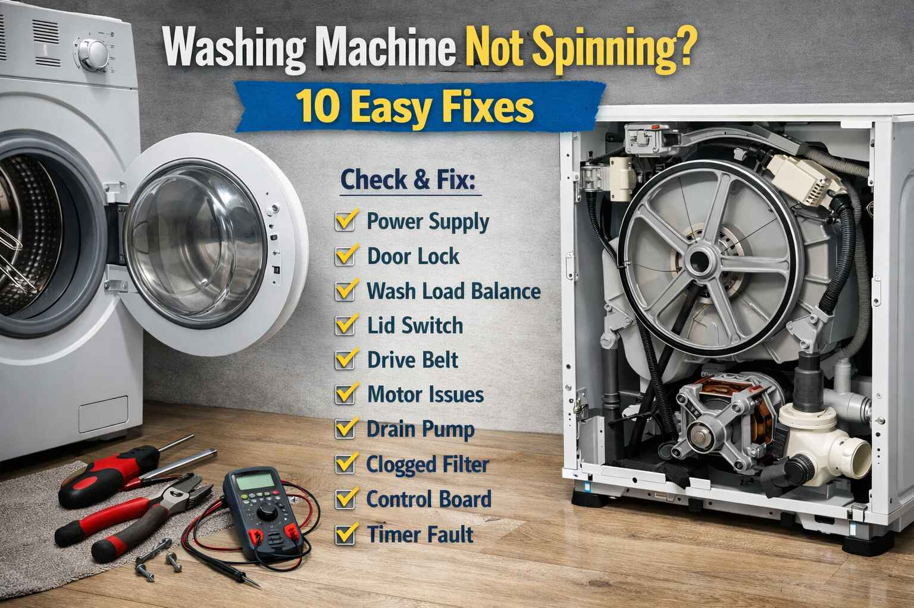

A family from Talhar called me in April 2002. They said "Our Dawlance washing machine is not spinning. The clothes are soaking wet. The machine makes a loud noise and stops." I asked them to check the load. They had put too many heavy blankets in one wash. They removed half the blankets. The machine started spinning normally. The father said "I was about to call a technician. You saved me time and money."
Brand: Dawlance | Problem: Overloading | Fix: Reduce load size
Washing machine not spinning? This is one of the most common appliance problems in Pakistani households. Before calling an expensive technician, try these 10 easy fixes. Most spin problems have simple solutions that you can do yourself in minutes.
First Thing to Check: If your washing machine stops mid cycle with clothes soaking wet, check if any error code is displayed. Common codes are UE for unbalanced, LE for door lock, and OE for drain error. This guide covers all these issues.
A school teacher from Kunri called me in August 2004. She said "My LG washing machine is showing UE error. The machine shakes during spin and then stops. The clothes are still wet." I asked her to check the load. She had washed only one large bedsheet. I told her to add a few towels to balance the load. She did that. The machine spun perfectly. She said "I never knew a single item could cause this problem. Thank you."
Brand: LG | Error: UE | Fix: Add items to balance load
Problem: Clothes are unevenly distributed in the drum. This is the number one cause of spin problems. The machine detects imbalance and will not spin to prevent damage.
Solutions: Open the door and redistribute the clothes evenly around the drum. Mix large and small items together. Do not wash single heavy items like blankets alone. If washing a single heavy item, add a few smaller items to balance the load. Restart the spin cycle.
Problem: Too many clothes are in the drum. When overloaded, the machine cannot spin properly and may stop.
Solutions: Check your machine's capacity. Most machines can handle 7 to 10 kilograms. Remove some items. Clothes should have room to move freely. For bulky items like blankets, wash them separately. Restart with a smaller load.
Problem: The washing machine wobbles or vibrates during spin because it is not level. This triggers safety sensors to stop spinning.
Solutions: Check if the machine rocks when you push the corners. Adjust the leveling feet at the bottom corners by turning them to raise or lower the machine. Use a spirit level on top of the machine. Ensure all four feet touch the floor firmly. Lock the adjustment nuts once the machine is level.
A businessman from Digri called me in November 2006. He said "My Samsung washing machine is not spinning. The machine stops with water inside. There is no error code." I asked him to check the pump filter. He opened the bottom panel and found the filter was completely blocked with lint and a small coin. He cleaned it. The water drained. The machine started spinning. He said "I will clean this filter every month from now on."
Brand: Samsung | Problem: Clogged pump filter | Fix: Clean filter, remove coin
Problem: If water cannot drain out, the machine will not spin. This is very common in Pakistani homes.
Solutions: Check the drain hose at the back. Ensure it is not bent or kinked. Make sure the hose is not pushed too far into the drain pipe. Check for clogs at the drain pipe connection. Straighten any kinks and ensure proper drainage.
Problem: The pump filter collects coins, buttons, lint, and debris. When clogged, water cannot drain and the machine will not spin.
Solutions: Turn off and unplug the machine. Open the filter cover at the front bottom. Place a tray or towel to catch water. Unscrew the filter cap by turning it counter clockwise. Remove all debris including coins, buttons, lint, and hairpins. Clean the filter under running water. Replace and screw it back securely.
Problem: The machine will not spin if it thinks the lid is open. The lid switch may be faulty or misaligned.
Solutions: Open and close the lid firmly. You should hear a click. Check if the lid is fully closed and latched. Look for the lid switch near the lid lock. Test it with a multimeter. If the switch is faulty, replacement is inexpensive.
A housewife from Tando Allahyar called me in February 2008. She said "My Haier washing machine is not spinning. The machine makes a humming sound but the drum does not move." I told her this could be a drive belt issue. She called a technician who opened the back panel. The belt was loose and slipping. The technician tightened the belt. The machine started spinning. She said "Thank you for telling me what to check."
Brand: Haier | Problem: Loose drive belt | Fix: Tighten belt
Problem: Front loaders have a door lock mechanism that must engage before spinning. If it is faulty, the machine will not spin.
Solutions: Ensure the door is fully closed. Listen for a locking sound when starting the cycle. Check the door latch for damage. If the lock fails, replacement is needed.
Problem: The drive belt connects the motor to the drum. If it is loose, broken, or worn, the drum will not spin.
Solutions: Unplug the machine and remove the back panel. Check the belt condition. Look for cracks or fraying. Check the belt tension. It should be tight but flexible. If it is loose, the tension may be adjustable. Replace a worn or broken belt. This is a cheap and easy DIY fix.
Problem: The motor capacitor helps start the motor. If it fails, the motor may hum but not spin.
Solutions: Listen for a humming sound when the spin should start. If you hear humming but no spinning, the capacitor is likely bad. The capacitor is a cylindrical component near the motor. Replace it with the same rating. Take a photo of the old capacitor to the shop to get the correct replacement.
A farmer from Mithi called me in October 2010. He said "My Orient washing machine is not spinning. The machine is not level and shakes a lot. What should I do?" I asked him to check the floor. The floor was uneven. He moved the machine to a different spot with a level floor. He adjusted the feet. The machine stopped shaking. The spin cycle worked perfectly. He said "Such a simple solution. Thank you for your help."
Brand: Orient | Problem: Uneven floor | Fix: Move machine to level floor
Problem: If the pump fails completely, water remains in the drum and the machine will not spin.
Solutions: Check if you hear the pump running during the drain cycle. If it is silent, the pump may be faulty. Check the pump for blockages through the filter. Test the pump with a multimeter for continuity. Replace the pump if it is faulty. Professional help is recommended for pump replacement.
Pakistan Specific Tips: In areas with hard water, clean the pump filter more frequently. Voltage fluctuations can damage the motor and PCB. Use a stabilizer for protection. In dusty environments, keep the machine covered when it is not in use. Check for rodent damage to wires, which is common in many areas.
Safety Warning: Always unplug your washing machine before any internal inspection. Water and electricity are a dangerous combination. If you are not confident, call a professional technician.